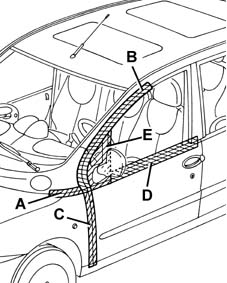

7005A Location of front door wind noise
- Path
- Test > 70 FITTINGS > 7005 PASSENGER COMPARTMENT FRONT SIDE DOORS > 7005A Location of front door wind noise
- Kind
- test / check procedure
- Applies to
- all engines; all production periods
- Interactive page
- https://sloeber94.github.io/elrnDB-fMltpl/en/#/2892407
Applies to: all engines; all production periods
Tape the various areas shown in the figure with masking tape.

Conduct a road test gradually bringing the car up to the noise where the noise starts: if the noise persists, check the sealant between the wing and pillar, at the bottom.
Remove the masking tape from area A and repeat the road test: if the noise persists, check the condition of the door seal in that area and that it is firmly attached to the bodywork (see PROCEDURES OP. 7005A34 front side door compartment seal r r); also check the condition of the the bonnet hinge buffer.
Remove the masking tape from area B and repeat the road test: if the noise persists, check the condition of the door seal in that area and that it is firmly attached to the bodywork (see PROCEDURES OP. 7005A34 front side door compartment seal r r).
Also check the door hinges (see PROCEDURES OP. 7005A14 front side door - adjust centering and moulding - includes adaptation of hinges and seals on door compartment). Remove shims from the top hinge, or add shims to the bottom hinge, so that the door adheres better to the seal.
Remove the masking tape from area C and repeat the road test: if the noise persists, adjust the door hinges (see PROCEDURES OP. 7005A14 front side door - adjust centering and moulding - includes adaptation of hinges and seals on door compartment). Remove or add shims on the two hinges, to make the door adhere better to the seal.
Remove the masking tape from area D and repeat the road test: if the noise persists, check the condition of the window glass seal (see PROCEDURES OP. 7005D26 front side descending window glass scraper (outer) r r).
Remove the masking tape from the rear view mirror (area E) and repeat the road test: if the noise persists, check the condition of the mirror seal (see PROCEDURES OP. 7005R30 electrically controlled door mirror (one) - r+r).
Topics linked from this page (4)
- 7005A14 front side door - adjust centering and moulding - includes adaptation of hinges and seals on door compartment
- 7005A34 front side door compartment seal r r
- 7005D26 front side descending window glass scraper (outer) r r
- 7005R30 electrically controlled door mirror (one) - r+r